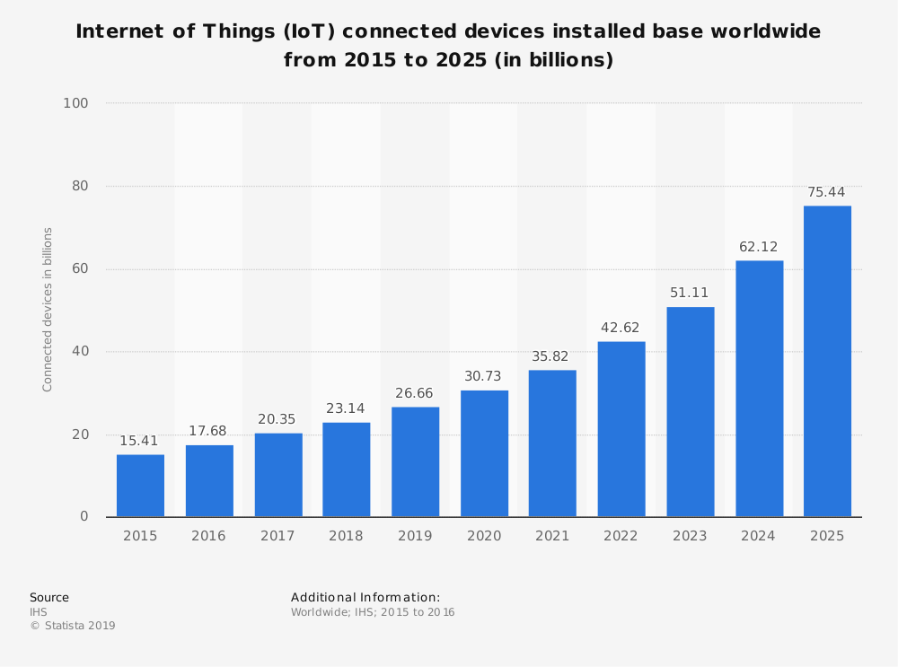

What on earth is IoT and how does it affect me?
As someone who works for an Internet of things (IoT) company, “What is IoT?” is something I am often asked.
Answering this question is not easy, as a technical answer will often result in confusion.
In order to explain what I do for a living, I’ve had to come up with a simple yet concise answer, that does justice to the beautiful industry that is IoT.
So what exactly is IoT?
In essence, IoT is the idea of connecting all devices which can collect and receive information to the internet and to each other. Everyday devices such as smartphones, computers, headphones, and lamps can be part of the IoT.
Pretty much anything you can think of can be part of the internet of things.
IoT is already happening around us. For example, IoT connected smoke detectors could help if a fire were to start in your office building. The smoke detector could turn on nearby sprinklers and also call local authorities, alerting them of the fire.
In this example, the smoke detector, sprinkler, and phone have all worked together to fix the problem.
This is the beauty of the internet of things. All technology working together to create effort free solutions.
How exactly does IoT affect me?

The analyst firm Statista predicts the number of connected devices is going to more than double - for a total of 75 billion - by 2025.
With exponential growth like this, the possibilities for the internet of things are endless.
Futuristic ideas such as:
- Smart bins
- Smart Parking
- Smart Lights
- Smart city services
- Smart heating and ventilation
- Smart Water
How exactly does IoT fit into business?
IoT has plenty of ways it can help optimise a business’ bottom line. Listed below are a few.
- Asset Tracking
- Smart Buildings
- Smart Agriculture
- Connected Vehicles
- Predictive Maintenance
- Asset Monitoring
The IoT industry is revolutionising the way businesses act and optimising the way their operations work. Worldwide more and more IoT solutions are being implemented every day, helping businesses bottom line. Regardless of the scale, size and industry, IoT is a vital necessity for any business.